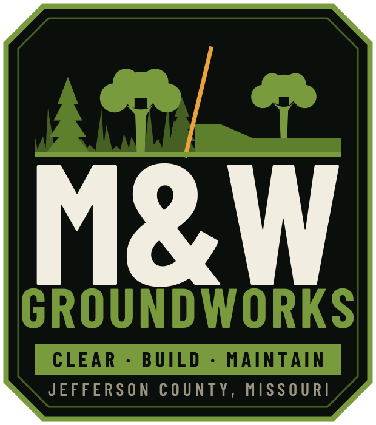
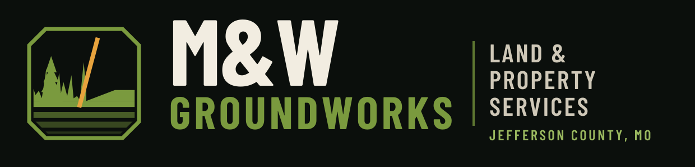
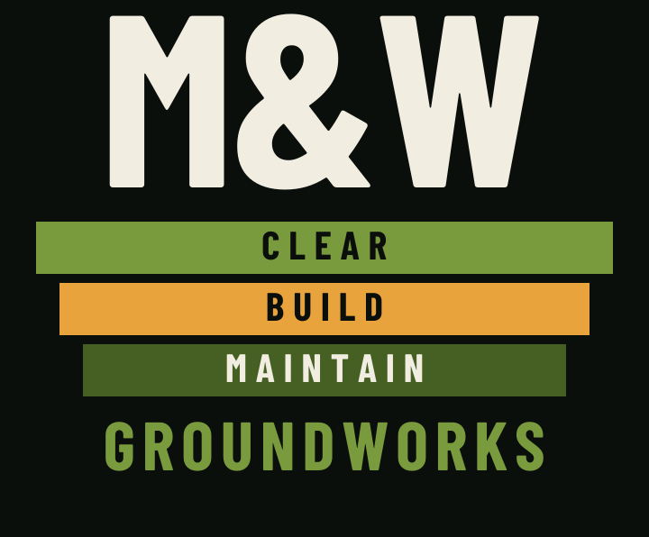
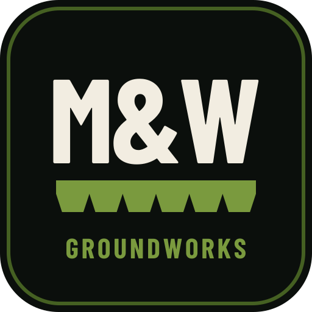
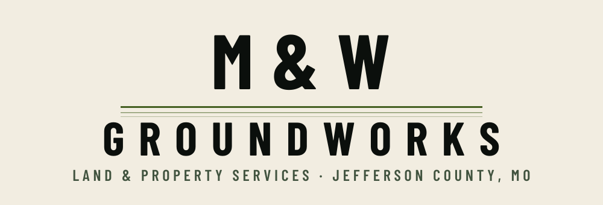
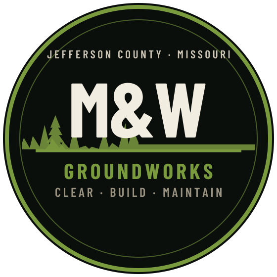

Identity
Six directions,
one system.
Every mark below is a real vector file with the letterforms converted to outlines — no font needed to open them, and no quality loss at any size, from a favicon to a billboard.
Starting point
What the current logos get right — and what breaks
Worth keeping
- The olive/moss green. It's distinctive and it's yours — every colour on this site was sampled straight out of your existing files.
- Heavy condensed capitals for M&W. Correct register for land work; the typography here matches it deliberately.
- The badge instinct. A contained shape is right for a trade business — it stamps, patches and reads on a door.
- "Clear · Build · Maintain." Strong three-beat line. It's structural throughout the new system.
What breaks
- The icon strip is a service list, not a logo. Six tiny pictograms plus four lines of type disappear below about two inches — which is most of where a logo actually lives.
- The cabin illustration says log-home builder. It points at the one thing you don't do.
- Three competing type treatments in one mark. Nothing is allowed to be the loudest thing.
- No single ownable mark. Nothing you can stamp alone on a hat, a favicon or a truck bed. Every concept below fixes that.
Concepts
Six marks
Ranked. Concept 01 is the recommendation; 02 is the one you'll use most often day to day.

Scale test — every mark must still read at 32px.



Scale test — every mark must still read at 32px.



Scale test — every mark must still read at 32px.


Scale test — every mark must still read at 32px.



Scale test — every mark must still read at 32px.



Scale test — every mark must still read at 32px.


Motion
The 3D mark
The extrusion below is built from the same letterform outlines as the flat logos, so the 3D version and the print version are literally the same geometry. It's live on the home page hero.
Bone faces, moss edges, amber blade. The terrain underneath grades itself flat over the first few seconds — clearing, in motion. Pauses when off screen, and renders a static frame for anyone with reduced-motion enabled.
Palette
Six colours
#0B0F0CBase. Every page sits on this.
#F2EDE1Primary text and the M&W wordmark.
#7A9A3EThe brand green, sampled from your existing logos.
#33461BSection fills and the trust bar.
#E8A33DEvery call to action. Nothing else.
#9A9382Secondary copy.
Amber is reserved for actions. The moment it appears somewhere decorative, it stops meaning "click this."
Typography
Two faces
Barlow
Condensed
Headlines, buttons, labels. Chosen because it is the closest live typeface to the lettering already in your logos — so the new system reads as a sharpening of what you have, not a replacement.
Barlow — body copy
Same family, normal width. Set at 17px with 1.65 line height for comfortable reading on a phone in a truck.
Both are open-licence and self-hosted on this site — no Google Fonts request, no external dependency, no tracking.
Pick a direction and we'll build it out.
The chosen mark gets the full set — colour, one-colour, reversed, favicon, social avatar, and print-ready files.